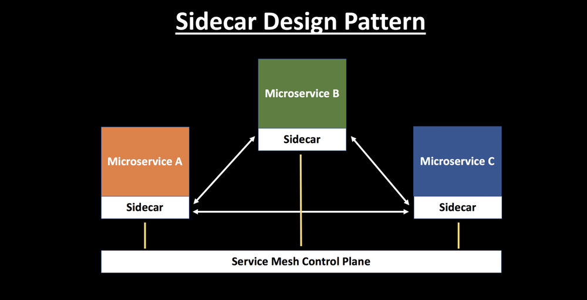

本文为翻译文章，点击查看原文。
Sidecar 设计模式已经越来越受欢迎，并在社区内得到更广泛的采用。构建具有高度可扩展性、弹性、安全性和可观察性的微服务架构具有挑战性。Service Mesh 架构的发展已经改变了游戏规则。它降低了与微服务架构相关的复杂性，并提供了许多功能，如负载平衡、服务发现、流量管理、熔断、遥测、故障注入等。
阅读我之前的博客能够了解 Service Mesh 的概念，为什么云原生应用需要它以及它受欢迎的原因——服务网格架构的兴起。
什么是 Sidecar 模式
将应用程序的功能划分为单独的进程可以被视为 Sidecar 模式。Sidecar 设计模式允许你为应用程序添加许多功能，而无需额外第三方组件的配置和代码。
就如 Sidecar 连接着摩托车一样，类似地在软件架构中， Sidecar 应用是连接到父应用并且为其扩展或者增强功能。Sidecar 应用与主应用程序松散耦合。
让我用一个例子解释一下。想象一下假如你有6个微服务相互通信以确定一个包裹的成本。
每个微服务都需要具有可观察性、监控、日志记录、配置、断路器等功能。所有这些功能都是根据一些行业标准的第三方库在每个微服务中实现的。
但再想一想，这不是多余吗？它不会增加应用程序的整体复杂性吗？如果你的应用程序是用不同的语言编写时会发生什么——如何合并那些特定用于 .Net、Java、Python 等语言的第三方库。
使用 Sidecar 模式的优势
- 通过抽象出与功能相关的共同基础设施到一个不同层降低了微服务代码的复杂度。
- 因为你不再需要编写相同的第三方组件配置文件和代码，所以能够降低微服务架构中的代码重复度。
- 降低应用程序代码和底层平台的耦合度。
Sidecar 模式是如何工作的
服务网格层可以存在于与应用程序一起运行的 Sidecar 容器中。 每个应用程序旁边都附有相同 Sidecar 的副本。
来自单个服务的所有传入和传出网络流量都流经 Sidecar 代理。 因此，Sidecar 能够管理微服务之间的流量，收集遥测数据并实施相关策略。从某种意义上说，该服务不了解整个网络，只知道附加的 Sidecar 代理。这实际上就是 Sidecar 模式如何工作的本质——将网络依赖性抽象为 Sidecar。

在服务网格中有数据平面和控制平面的概念：
- 数据平面的职责是处理网格内部服务之间的通信，并负责服务发现、负载均衡、流量管理、健康检查等功能。
- 控制平面的职责是管理和配置 Sidecar 代理以实施策略并收集遥测。
在 Kubernetes 和 Istio 世界中，你可以将 Sidecar 注入 Pod 内。Istio 使用带有 Envoy 的 Sidecar 模型作为代理。
来自 Lyft 的 Envoy 是为云原生应用程序设计的最流行的开源代理。Envoy 依附着每项服务运行，并以平台无关的方式提供必要的功能。所有的服务流量都通过 Envoy 代理流动。
从单体服务到微服务的转变使组织能够独立且大规模地部署应用程序。 在 Container 和 Kubernetes 世界中，Sidecar 设计模式更适合。Sidecar 从应用程序中抽象出了复杂性，并处理服务发现、流量管理、负载均衡、断路器等功能。
在此处了解有关 Sidecar 模式的更多信息：
https://docs.microsoft.com/en-us/azure/architecture/patterns/sidecar